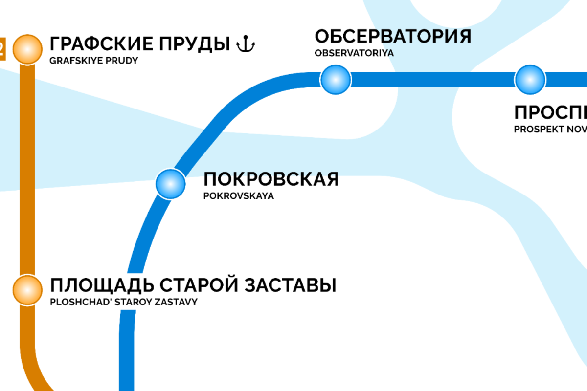

BMP - Metro Project
Игра про выдуманную систему метрополитена в выдуманном городе Берёзовецк, который находится в России. Сама игра находится в разработке, официальное открытие планируется до конца января 2027 года.
Схема метро

Новости
Разработка
Узнайте больше о процессе создания нашей игры, технических деталях и текущем прогрессе строительства станций.
Вакансии
Станьте частью команды BMP. Мы ищем талантливых строителей, скриптеров и дизайнеров для реализации проекта.
Ссылки
Полезные ресурсы, социальные сети проекта и ссылки на официальную документацию.